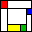

 Welcome to wxGlade’s documentation!¶

Contents:
- wxGlade Overview and Quick Start
- wx Basics
- Tutorial Project: Calculator
- Create and Use Source Code
- Dialogs
- Custom Widget
- Menu, Status Bar, Tool Bar
- Bitmaps
- Further reading
- Reference: Keyboard and Mouse Actions
- License and Acknowledgements